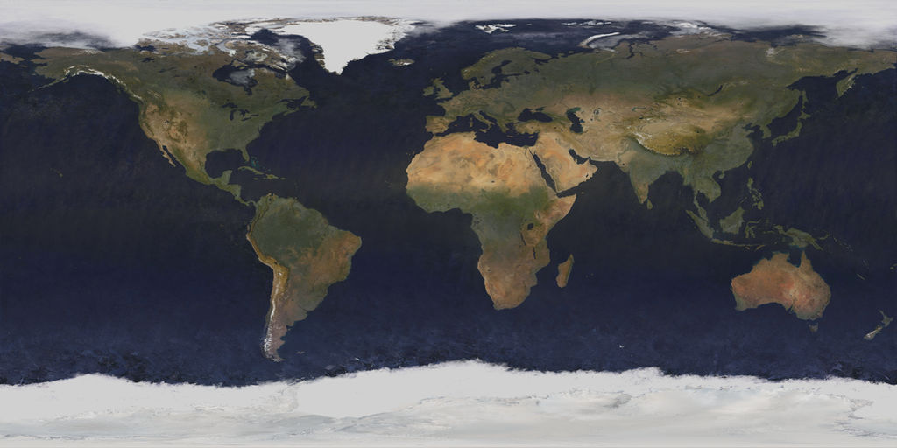

Wiki Page:
This is a current brainstorm of the ideas I have for the final project. Topics that currently interest me are Machine Learning, Astronomy, and Satellite Imagery.
Ideas will most likely be eliminated as I understand more about what the course is about and build up tools to make a Web GIS.

For image source click on the image.